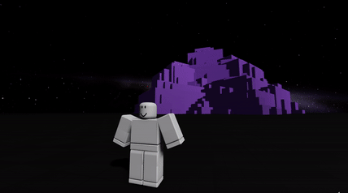

◄
Projects
Unreal Virtual Reality Development

C++, Unreal Engine 5, Virtual Reality, 3D Modeling, Game Engineering
Programmed client side physics based movement, climbing, and swordfighting script systems.
Developed spatial mapping and audio, dynamic camera augmentation, and virtual weight distribution
using Unreal Engine's C++ based game development environment.
Implemented 15+ assets by modeling and exporting from Blender 3D software.
"The Mountain" - Roblox Physics Simulator

Lua, Roblox Studio, Blender, Animation Rigs, Game Development
Developed ”Mountain”, a gravity based simulator game, showcasing and testing the limits of World Development, the
Physics Engine, and Rendered 3D models on the Roblox Studio development platform
Applied body velocity and instances of force vectors to simulate gravity and anti-gravity exertion, later implemented to
make calculated launch trajectories in any given direction
Full Game development stack, including Programming Tool scripts integrated with High-Resolution 3D models and Rig
Animations in Blender, and also designing VFX elements natively on Studio
Dynamic HTML DataScraper

HTML, Python, BeautifulSoupAPI, Requests, Webscraping
Engineered versatile web scraping scripts extracting HTML data modularly employing
BeautifulSoup and Requests libraries capable of parsing 10,000 objects every second.
Integrated efficient data storage and translation system
facilitating management of scraped objects to designated files/formats.
Autonomous Discord Administration Bot
Python, DiscordAPI, Discord, Automation, User Handling
Developed autonomous Discord management scripts deploying real-time
server commands and user content monitoring utilizing Python and DiscordAPI.
Built modularity of bot architecture for increased scalability and user adjustability.